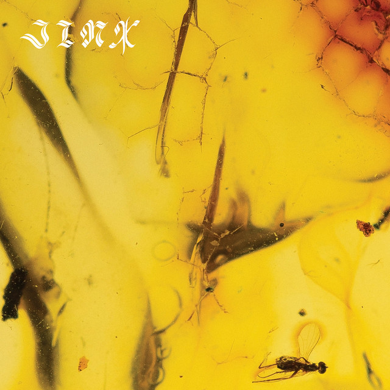

Crumb is an American psychedelic rock band. The group is a collaboration of Brooklyn-based musicians Lila Ramani (guitar, vocals), Jesse Brotter (bass, vocals), Bri Aronow (synthesizers, keyboard, saxophone), and Jonathan Gilad (drums), who met while attending Tufts University.
Ramani, Brotter, Aronow, and Gilad met at Tufts University, often living and playing together until 2016, when they developed and recorded a collection of songs Ramani had started writing in high school and college. The collaboration resulted in the band’s first two EPs, Crumb (2016) and Locket (2017), the latter of which was released while the band was split between Boston and New York. Both EPs were independently released, with limited vinyl runs and cassettes released by DIY label Citrus City Records. Crumb went on to release their debut full-length album, Jinx, on June 14, 2019.The album received positive reviews from music critics. On March 10, 2021, the band shared "Trophy", the first single since 2019. The music video was directed by Haoyan of America, and features animations by Truba Animation. Their second full-length album Ice Melt was released on April 30. Album cover for Jinx
Indie Current described Crumb's sound on 'Locket' as psychedelic slacker-rock.[11] Paste magazine called their sound a meld of "60s psych, loose jazz, and freeform indie rock into a soothing pop amalgamation." Others describe them as psychedelic jazzy Lofi dream pop.
Watch one of their music videos here!
| Studio Albums | EPs | Singles |
|---|---|---|
| Jinx (2019) | Crumb (2016) | Trophy (2021) |
| Ice Melt (2021) | Locket (2017) | BNR/Balloon |
Watch their live performances here!